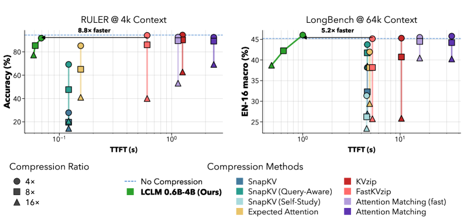

Why it matters왜 중요한가
The dominant way to shrink long-context cost — evict "unimportant" tokens from the KV cache — has two quiet failures: it must prefill the full context first (so it barely speeds up time-to-first-token), and on information-dense inputs it throws away tokens that turn out to matter.
긴 맥락 비용을 줄이는 주류 방식 — KV 캐시에서 "덜 중요한" 토큰을 제거 — 에는 조용한 두 실패가 있다: 전체 맥락을 먼저 프리필해야 하고(그래서 첫 토큰까지 시간은 거의 안 빨라짐), 정보가 빽빽한 입력에서는 정작 필요한 토큰을 버린다.
LCLM revives an older idea — "soft-token" encoder–decoder compression — and shows that with a careful architecture sweep and a 4-stage, 350B-token training recipe, it finally beats KV-cache compression on the accuracy–latency–memory frontier without being task-specialised. Because compression happens before decoder prefill, higher compression directly cuts decoder compute and memory, and the decoder emits a standard, uniform KV cache that drops straight into vLLM/SGLang.
LCLM은 더 오래된 아이디어 — "소프트 토큰" 인코더–디코더 압축 — 을 되살리고, 세심한 아키텍처 스윕과 4단계·350B 토큰 학습 레시피로 그것이 마침내 정확도–지연–메모리 프론티어에서 KV 캐시 압축을 이긴다는 걸 보인다. 그것도 태스크 특화 없이. 압축이 디코더 프리필 이전에 일어나므로 압축률이 높을수록 디코더 연산·메모리가 직접 줄고, 디코더는 vLLM/SGLang에 그대로 꽂히는 표준·균일 KV 캐시를 내놓는다.

By the numbers핵심 숫자
The result that separates it from KV evictionKV 제거 방식과 갈라지는 결과
| Model | RULER 4k | LongBench en16 | GSM8K |
|---|---|---|---|
| Qwen3-4B (full KV) | 94.41 | 45.21 | 93.25 |
| LCLM 0.6b-4b (Mean) | 75.06 | 39.08 | 81.05 |
| AM-Slow (KV evict) | 69.21 | 40.26 | 29.80 |
| SnapKV-QA (KV evict) | 20.54 | 38.52 | 0.08 |
| ExpAttn (KV evict) | 40.97 | 29.44 | 0.08 |
In one diagram한 장의 그림
The core ideas핵심 아이디어
Latents, not evictions
An encoder (initialised from Qwen3-Embedding-0.6B) maps each block of N tokens to one continuous latent via mean pooling over a 1024-token causal window; a tiny MLP adapter rescales it to the decoder's width. The 4B decoder then consumes the short latent sequence as its context — nothing is deleted, the information is re-encoded.
인코더(Qwen3-Embedding-0.6B에서 초기화)가 1024 토큰 causal 윈도우에 mean pooling을 적용해 N개 토큰 블록마다 하나의 연속 잠재로 매핑하고, 작은 MLP 어댑터가 그것을 디코더 차원으로 맞춘다. 그러면 4B 디코더가 짧은 잠재 시퀀스를 맥락으로 소비한다 — 아무것도 삭제하지 않고, 정보를 다시 인코딩한다.
What actually wins at scale
A from-scratch 38B-token sweep settles the design: mean pooling, encoder window W=1024, causal (not bidirectional) masking, an MLP (not attention) adapter, and an embedding-initialised encoder. A revealing scaling law: enlarging the decoder drops loss far more than enlarging the encoder — the encoder only has to summarise.
밑바닥부터 38B 토큰 스윕으로 설계를 확정한다: mean pooling, 인코더 윈도우 W=1024, causal(양방향 아님) 마스킹, MLP(어텐션 아님) 어댑터, 임베딩 초기화 인코더. 흥미로운 스케일링: 디코더를 키우는 것이 인코더를 키우는 것보다 손실을 훨씬 많이 줄인다 — 인코더는 요약만 하면 되기 때문.
4 stages + reconstruction
Training goes adapter-warmup → encoder → end-to-end → SFT, with three data types: continual-pretrain text with interleaved compressed/uncompressed blocks (loss only on the uncompressed tokens), instruction SFT with compressed prompts, and an auxiliary objective that asks the decoder to reproduce the exact original text — forcing latents to keep fine-grained detail.
학습은 어댑터 워밍업 → 인코더 → end-to-end → SFT 순으로 진행되며 세 종류의 데이터를 쓴다: 압축/비압축 블록을 교차한 연속 사전학습 텍스트(손실은 비압축 토큰에만), 압축된 프롬프트의 instruction SFT, 그리고 디코더가 원문을 정확히 재현하게 하는 보조 목적(잠재가 세밀한 디테일을 보존하도록 강제).
How it works어떻게 작동하나
- Chunk & encode.청크로 나눠 인코딩. Split the context into 1024-token windows; the encoder mean-pools each block of N tokens into a single latent vector (N/16 latents at 16×). 맥락을 1024 토큰 윈도우로 나누고, 인코더가 N개 토큰 블록마다 mean pooling으로 하나의 잠재 벡터를 만든다(16×면 N/16개 잠재).
- Adapt.어댑팅. A two-layer MLP projects latents from the encoder's hidden size to the decoder's — cheaper and better than an attention adapter. 2층 MLP가 잠재를 인코더 차원에서 디코더 차원으로 투영한다 — 어텐션 어댑터보다 싸고 더 좋다.
- Decode on latents.잠재 위에서 디코딩. The decoder uses the short latent sequence in place of raw tokens and produces a normal, uniform KV cache — so vLLM/SGLang need no special kernels. 디코더가 원본 토큰 대신 짧은 잠재 시퀀스를 쓰고 평범하고 균일한 KV 캐시를 만든다 — 그래서 vLLM/SGLang에 특수 커널이 필요 없다.
- Train in stages.단계적으로 학습. Warm up the adapter, then the encoder, then unfreeze the decoder end-to-end, then SFT — 350B tokens total, with a reconstruction loss for detail fidelity. 어댑터를 워밍업하고, 인코더를, 그다음 디코더를 풀어 end-to-end로, 마지막 SFT — 총 350B 토큰, 디테일 충실도를 위한 재구성 손실 포함.
- Expand on demand (agentic).필요 시 펼치기(에이전트). An agent sees the whole context compressed and calls EXPAND(i) to uncompress just the chunk it needs — pushing needle-in-a-haystack accuracy back toward uncompressed. 에이전트는 전체 맥락을 압축된 채로 보고, 필요한 청크만 EXPAND(i)로 펼친다 — needle-in-a-haystack 정확도를 비압축 수준으로 끌어올린다.
What to take away그래서, 가져갈 것
Learned compression beats eviction on dense inputs. At 16×, LCLM keeps GSM8K at 81.0 while SnapKV/ExpAttn/KVzip fall to ~0 — eviction discards tokens that turn out to be load-bearing; a trained encoder re-packs them.
밀집 입력에서는 학습된 압축이 제거를 이긴다. 16×에서 LCLM은 GSM8K 81.0을 유지하지만 SnapKV/ExpAttn/KVzip은 ~0으로 떨어진다 — 제거는 정작 중요한 토큰을 버리고, 학습된 인코더는 그것을 다시 담는다.
Real wall-clock and memory wins. Up to 8.8× faster TTFT, memory that plateaus at long context, and serving at 1M tokens where baselines OOM — because the sequence shrinks before prefill, not after.
실제 시간·메모리 이득. TTFT 최대 8.8× 빠름, 긴 맥락에서 평탄해지는 메모리, 베이스라인이 OOM 나는 1M 토큰에서도 서빙 — 시퀀스가 프리필 이전에 줄어들기 때문.
Production-shaped output. A standard uniform KV cache means it slots into existing engines, and the EXPAND tool turns it into a clean backbone for long-horizon agents.
실전형 출력. 표준·균일 KV 캐시라 기존 엔진에 그대로 들어가고, EXPAND 도구는 이것을 장기 에이전트의 깔끔한 백본으로 만든다.